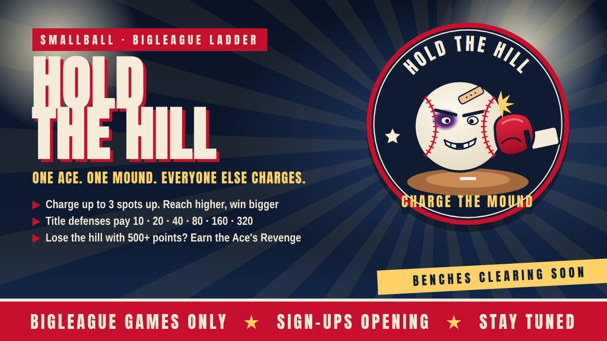
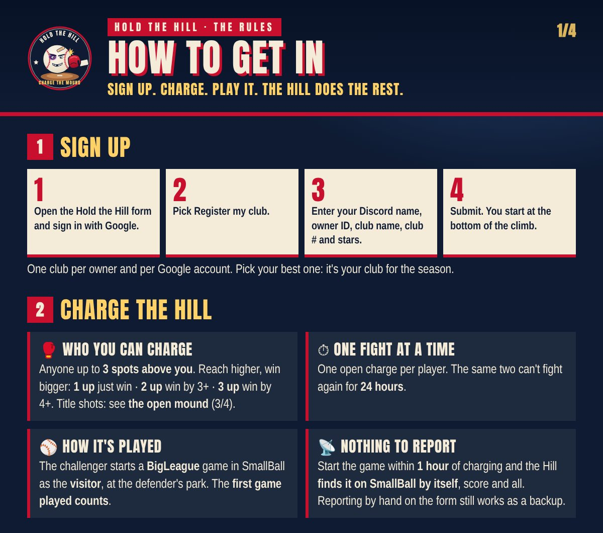
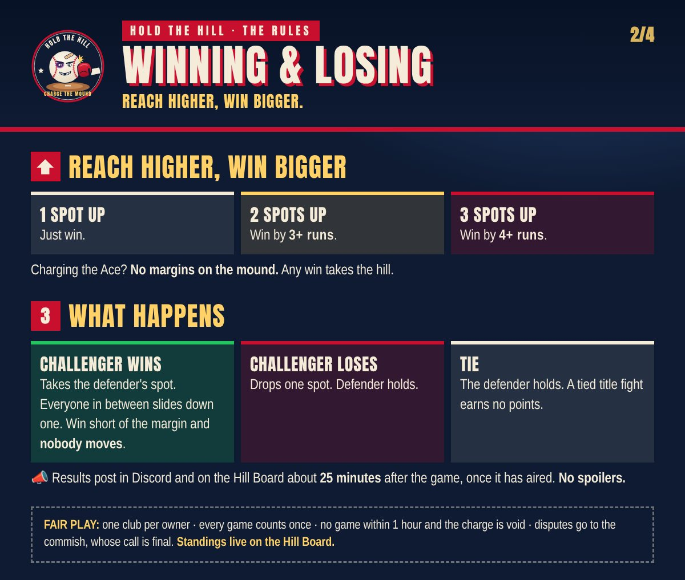
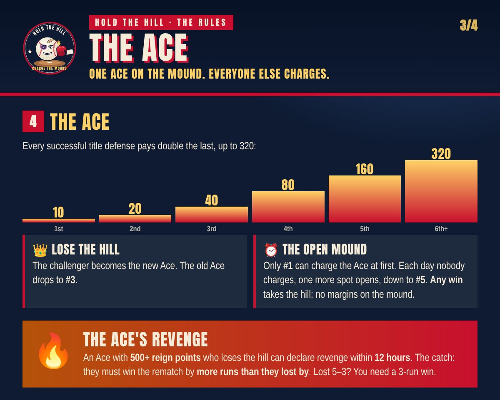
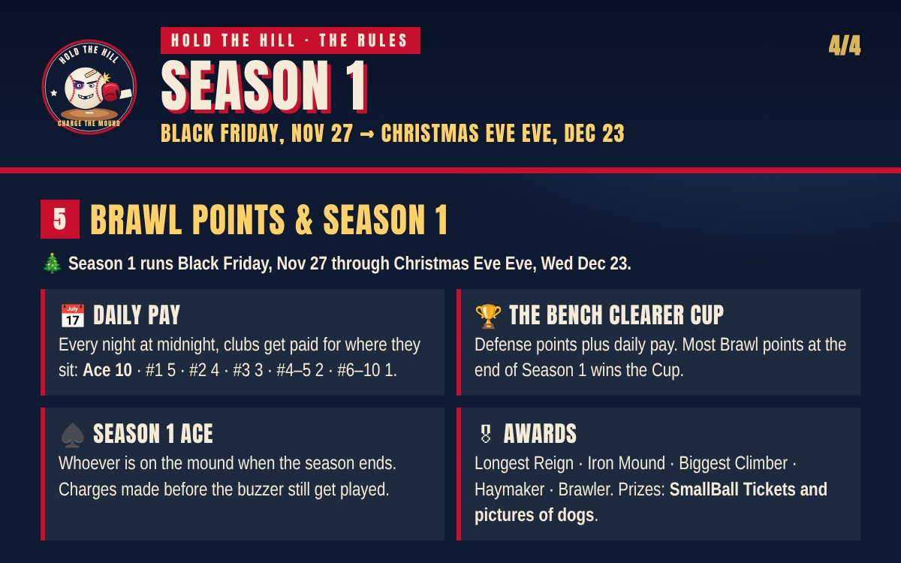
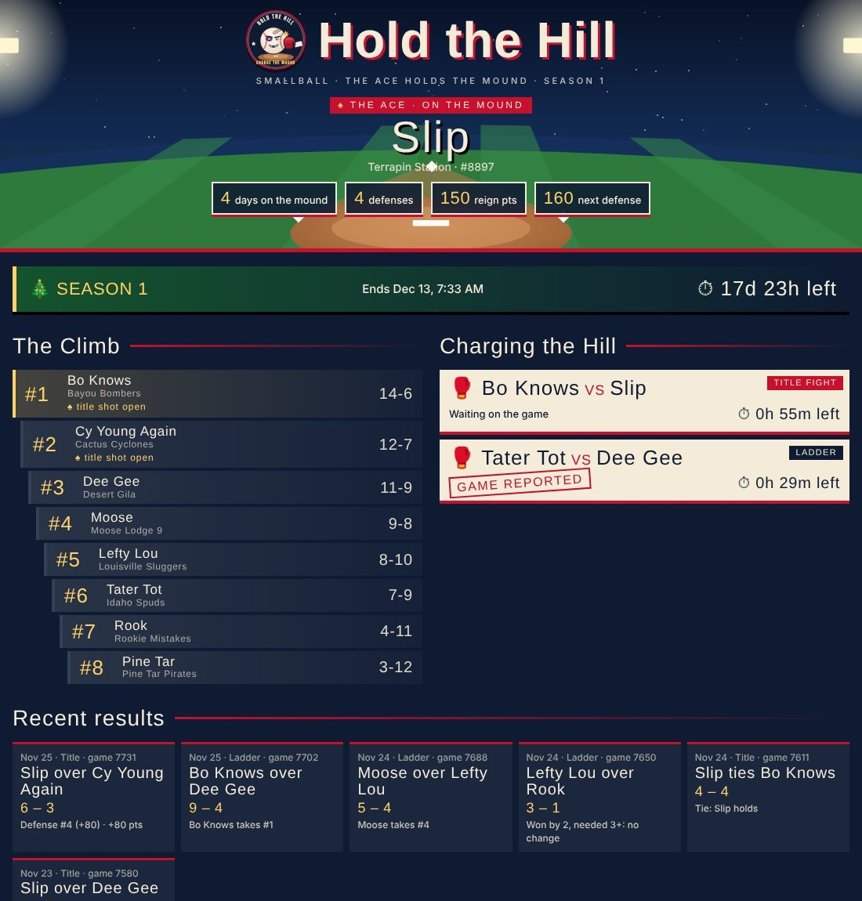

A King-of-the-Hill BigLeague ladder for SmallBall. Climb the ladder, charge the mound, take it from the Ace and hold it.
Sign up early: the faster you sign up, the higher you start.

One club per owner on a single ladder. You start at the bottom in sign-up order.
Charge anyone up to 3 spots above you. 1 up: just win. 2 up: win by 3+. 3 up: win by 4+.
Only #1 gets the title shot, no margin needed. If #1 sits idle, the mound opens one more spot a day, down to #5.
Lower-star clubs win by less (1 run off per star behind), and upsets pay bonus Brawl points.
Games are found on SmallBall automatically, and results post only after they've aired.
Daily Brawl points by ladder spot, plus awards like Longest Reign, Biggest Climber and Giant Killer. Prizes: SmallBall Tickets and pictures of dogs.
Play-money Brawl Bucks: bet on yourself in your own matchups, and Ace futures that move as the Climb changes.
Pick it on the Hill form and your list, with club IDs and margins, posts in #hill-help.




A live web page with the Ace on top of the Climb, who each spot can charge, the fights in progress, recent results, reigns, the season clock and the odds.

Full guide: hold-the-hill on GitHub.